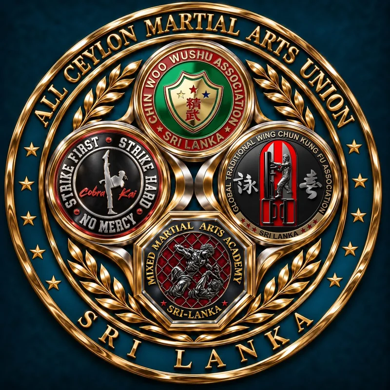

Sri Lanka
About ACMA Union
All Ceylon Martial Arts Union brings together four constituent martial arts organizations in Sri Lanka.
The Four Pillars
- Chin Woo Wushu Association – Sri Lanka
- Global Traditional Wing Chun Kung Fu Association – Sri Lanka
- MMA Academy – Sri Lanka
- Cobra Kai – Sri Lankan representation
Explore each pillar’s history, instructors and international affiliations.
Explore the Four Pillars